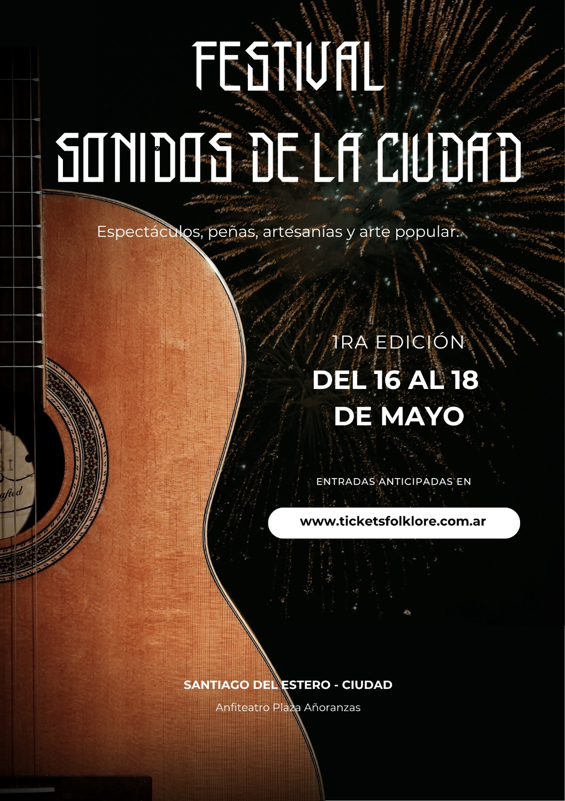

Un encuentro vibrante que celebra la riqueza del folklore argentino, uniendo a talentosos artistas populares de todo el país. En esta fiesta de la tradición, la música, la danza y las historias de nuestra tierra se entrelazan para honrar nuestras raíces y compartir la pasión por nuestra cultura Santiagueña.
¡Te esperamos para vivir juntos la magia de Sonidos de Mi Ciudad!
nete a nosotros en un evento único que celebrar谩 la cultura folklórica argentina en la Madre de Ciudades.
Fechas: 16, 17 y 18 de Mayo 2025
Lugar: PLAZA AORANZAS